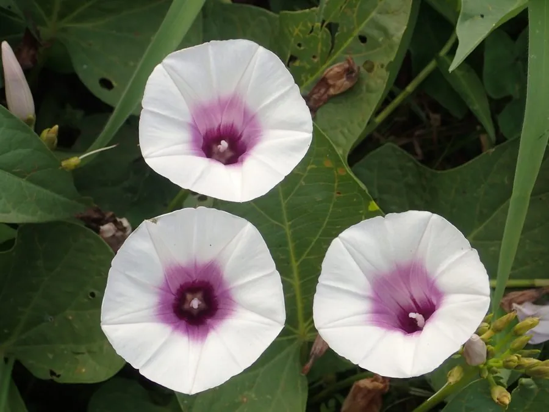

农作物与经济植物 · 植物界
甘薯 Ipomoea batatas

甘薯的地下块根富含淀粉和糖分，可蒸煮、烤食或制粉丝，产量高、耐瘠薄，是重要的粮食与经济作物。
- 分类
- 门被子植物门纲双子叶植物纲目茄目科旋花科属番薯属
- 栖息环境
- 热带与亚热带、温带的沙壤土旱地，喜温暖、耐旱耐瘠薄
- 地理分布
- 原产南美热带，现主产于中国、印度、非洲等地
- 保护级别
- 暂无评估（栽培作物）
物种志
甘薯是旋花科一年生或多年生草本，茎蔓生，匍匐地面，长可达 2–3 m，节上易生不定根。叶片心形或掌状分裂，互生。花漏斗状，淡紫色或白色，少见开花。地下不定根膨大形成块根，形状有纺锤形、球形等，皮色有红、黄、白、紫等，肉色也因品种而异。
甘薯原产南美洲热带地区，约 5000 年前被驯化，16 世纪经海路传入中国，因耐旱耐瘠、产量高而迅速推广。它喜温暖、光照充足，耐干旱、耐瘠薄，不耐霜冻，适宜在土层深厚的沙壤土中种植，多用块根育苗扦插繁殖。块根富含淀粉、糖分和胡萝卜素，可蒸煮、烤食、煮粥，也可加工淀粉、粉丝、粉条和酒精；茎叶嫩梢可作蔬菜，藤蔓可作饲料。中国是世界上最大的甘薯生产国。
形态与习性
- 块根纺锤形或球形，皮色多样
- 茎蔓生，长可达 2–3 m
- 叶心形或掌状分裂
- 繁殖块根育苗扦插
- 用途蒸煮、烤食、淀粉与粉丝
- 特性耐旱耐瘠薄，产量高
趣味知识
- 甘薯原产美洲，16 世纪才经海路传入中国。
- 甘薯的块根、嫩梢和藤蔓都能利用，是“全身是宝”的作物。
- 甘薯耐旱耐瘠薄，在山坡旱地也能获得高产。